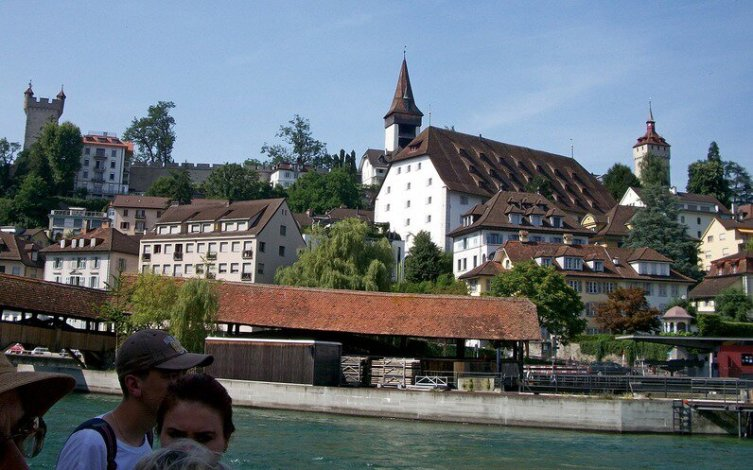
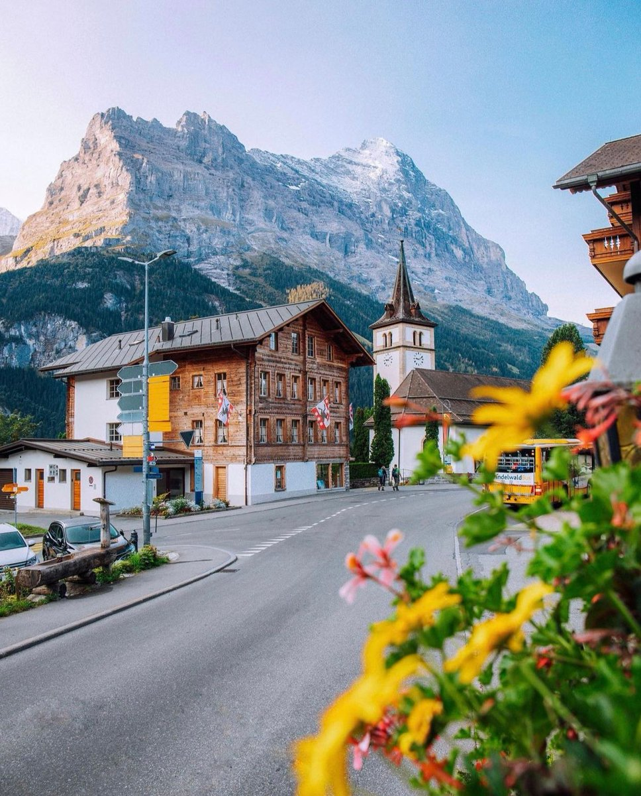

Швейцария — страна загадок. Со своими тайнами и чарующими особенностями, она не перестаёт поражать воображение всех тех, чей интерес к государству швейцарцев, их устоям и менталитету постоянно подпитывает желание узнавать о Конфедерации все больше и больше.
Кому-то Швейцария может показаться скучноватой, кому-то — чересчур дорогой, зато кто-то найдет там самые очаровательные замки в мире, а другой — лучшие трассы Альп. И каждый будет по-своему прав. Кроме того, не будем забывать и еще об одном свойстве этой страны, которое кое-для кого стабильно перевешивает все вышеуказанные минусы (да и плюсы — тоже): это, разумеется, возможность приобщиться к обществу всевозможных знаменитостей. С завидной регулярностью склоны Швейцарских Альп оглашаются мелодичным визгом топ-моделей, криками наследных принцев и даже (в сезон) матерными конструкциями российского поэта-песенника Сергея Шнурова.
Так что совершенно неудивительно, что горнолыжные курорты Швейцарии делятся на две категории: для миллиардеров и для миллионеров. Пусть это явное преувеличение, однако толика правды в нем есть: фактор престижа — главный здешний туристический козырь, а приобщение к элите подразумевает ощутимые финансовые затраты. Пожалуй, даже полностью победившим снобизм личностям будет приятно проехаться по горному серпантину, «засветившемуся» в «Бондиане», или отобедать «за тем самым столиком». Впрочем, у направления немало других плюсов: вылизанные трассы на любой вкус, лучшие в мире горные отели и целая масса исторических достопримечательностей, в основном замков. Из минусов можно выделить все ту же дороговизну… однако красиво жить, как известно, не запретишь!
Один из самых жизнерадостных городов Люцерн встречает символом страны — львом, изображение которого выбито в огромной скале. В небольшой водоём перед скалой все туристы бросают монетки, в надежде вернуться сюда ещё раз. И немудрено: Люцерн — памятник, по которому надо непременно ходить пешком, чтобы почувствовать дух средневековья.
За её природные ландшафты Конфедерацию называют"страной озёр и Альп".И правда: около 60 процентов площади занимают величественные Альпы. А количество водоёмов колеблется возле отметки в 1500.
Вместе с тем, Швейцария — отнюдь не только «музейная» страна. Люди живут здесь в свое удовольствие: занимаются спортом, ходят в прославленные на весь мир театры, устраивают многочисленные фестивали. Недаром королева Великобритании Елизавета II сказала во время визита в Берн: «Швейцария — это рай» .